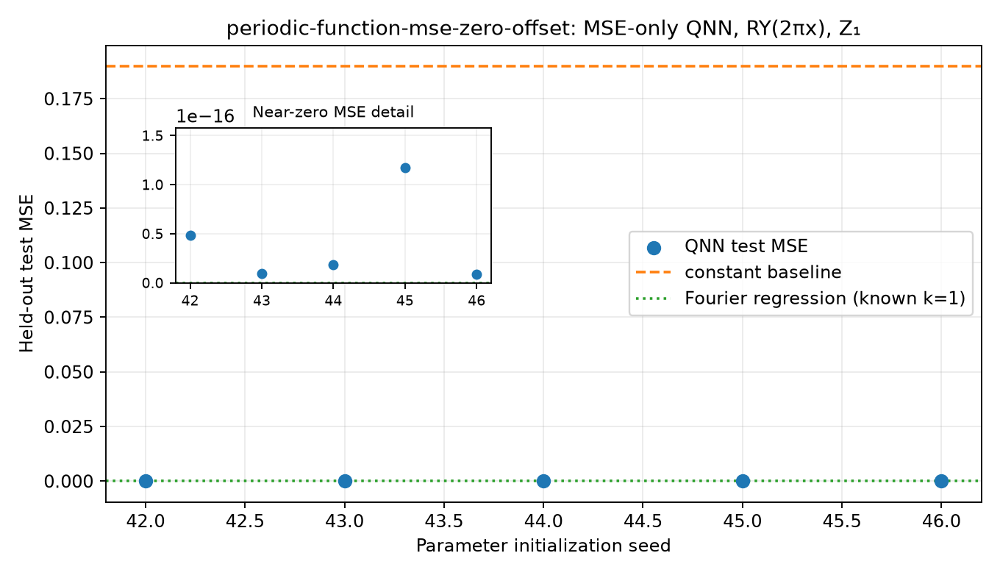

Objective: supervised training-set MSE only; no Frobenius/process-fidelity alignment or PINN residual. Encoding: RY(2πx)|0⟩ on q0, x∈[0,1), period 1. Readout: ideal Pauli-Z expectation on q1.
Target: y=0.0+0.55 cos(2πx)+0.25 sin(2πx). Data seed: 314159; split sizes: 64/128/512.
Five initialization seeds: [42, 43, 44, 45, 46]. Mean test MSE: 4.0429722e-17; population SD: 4.0896063e-17; mean iterations: 8.00; peak-frequency accuracy: 1.000.
Paired comparison: nonzero-offset group. The train/validation/test input points match exactly; labels differ by 0.10. This is a five-initialization proof of concept on one dataset.

| Seed | Iterations | Test MSE | Validation MSE | Peak frequency correct | Run |
|---|---|---|---|---|---|
| 42 | 11 | 4.805494e-17 | 4.5374424e-17 | True | run report |
| 43 | 7 | 9.5164055e-18 | 9.2322204e-18 | True | run report |
| 44 | 7 | 1.8605304e-17 | 1.7806613e-17 | True | run report |
| 45 | 6 | 1.1709138e-16 | 1.1062537e-16 | True | run report |
| 46 | 9 | 8.8805842e-18 | 9.5272181e-18 | True | run report |